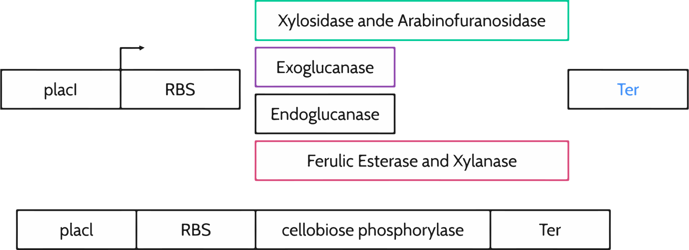
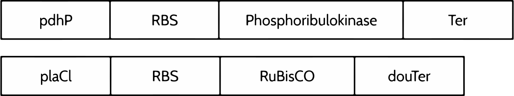
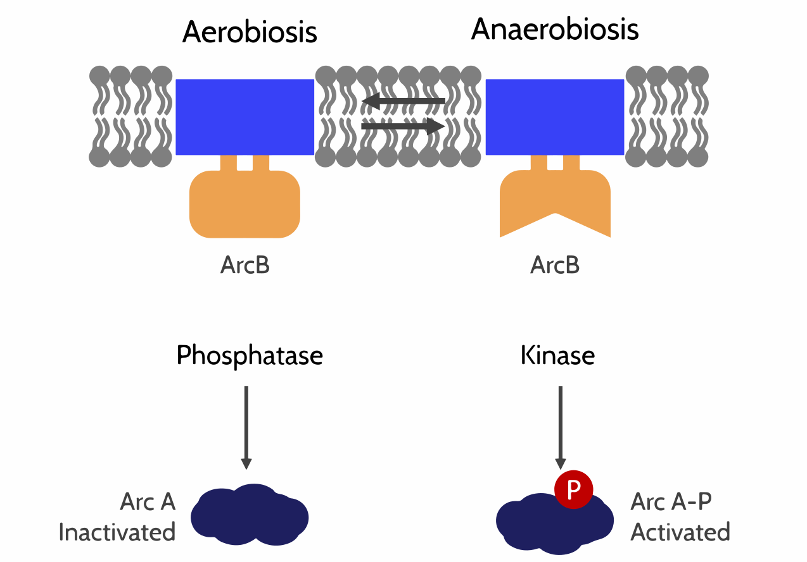
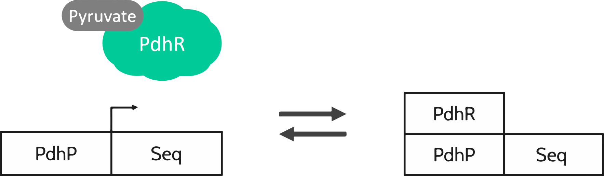
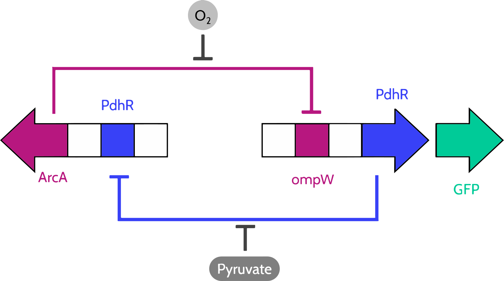
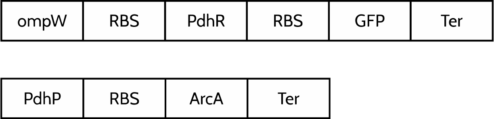

In order that E. coli produce PHBs using the CO2 from the marine environment we divided the process in tree main steps, listed below.
The vegetal waste is a good source of valuables carbohydrates, as xylose and glucose because the main component of cellular walls are polymers of this molecules, cellulose and xylane respectively. Of course, just organisms which the necessary enzymes can get access to this sugar source, however, E. coli does not have these molecular machineries, so, we decided to introduce the enzymes Xylosidase and Xylanase to degradate xylane; Endolucanase and Exoglucanase to get cellobiose from Celullose. The cellobiose is a toxic moleculel for E. coli, so we introduced the cellobiose phosporylase, an enzyme which degrade it in glucose and allows E. coli survive this medium.
In order to produce 3- Phosphoglycerate (3PGA) from CO2 and xylose (got in the previous step) we introduced in E. coli the enzymes Phosphoribulokinase, Rubisco and Carbonic anhydrase.
In our project we tried to use the H2CO3, the main molecule causing the ocean acidification, as a source of CO2. The reaction H2CO3 <=> CO2 + H2O is catalyzed by carbonic anhydrase, then we introduced this enzyme in E. coli to get CO2 from the environment meanwhile our bacteria decrease the acidification level.
E. coli strain can metabolize the xylose into Ribulose-5- phosphate (R5P) through the pentose phosphate pathway, taking advantage of this we think to use the Phosphoribulokinase to provide E. coli with the capability to convert R5P into Ribulose 1,5 Bisphosphate.
The Ribulose 1,5 Bisphosphate and CO2 are substrates for Rubisco, which converts them into 3PGA molecules.
Why was the previous step focus in the production of 3-PGA?
The 3-PGA is molecule that is present in the Glycolisis pathway, this series of reaction has like final product the pyruvate which is the substrate for PHB production.
Even though exist other forms to get pyruvate, the glycolysis is ideal for two main reasons, theoretically the 3-PGA produced by rubisco can be used in this pathway and it doesn't require oxygen.
This is an important point, Rubisco can Fix CO2 and O2, in order to achieve the best efficiency from rubisco we need to use it under anaerobic conditions to reduce the photorespiration phenomena caused by the O2 fixation and maintain the pyruvate production in the maximum level.
Other molecule used in the maintenance of glycolysis is the glucose got in the degradation step, also this molecule can be used in the pentose phosphate pathway to produce R5P.
The production of pyruvate guaranteed also will provide a high quantity of Acyl-coA, the substrate by the PHB production. This series of reaction in mediated by the enzymes 3-ketothiolase (PhaA), acetoacetyl-CoA reductase (PhaB) and PHA Synthase (PhaC). Which were introduced in E. coli.
The Anoxic Respiratory Control system (Arc) allows E. coli regulate many Genes implicated in aerobic or anaerobic pathways. This system is composed by the response regulator ArcA and the sense kinase ArcB. When E. coli is under Anaerobic conditions ArcB has kinase activity, so it phosphorylate ArcA protein which is activated and repress the gene related with aerobic metabolism. Under aerobic conditions ArcB get phosphatase activity and remove the phosphate group from ArcA, then this molecule lose the repression activity and and genes related with aerobic condition are expressed.
In other hand, E. coli has an Operon from pyruvate dehydrogenase complex (PDHC), which detects the pyruvate concentration though the pdh Repressor Protein. When there are no pyruvate molecules the pdhR binding the pdh promoter and repress the expression of the pdh operon and other genes with the same target sequence, on the other hand, when the pyruvate concentration is high this molecule binds the pdhR producing the pdhR-pyr complex, which do not have the capability to bind the pdh promoter then the pyruvate dehydrogenase complex operon is activated allowing the expression of PDHC and the pyruvate degradation, other enzymes which usually are repressed by pdhR are expressed with high concentration of pyruvate.
Since our project was developed under anaerobic conditions we thought that use this molecules will be a good idea. The expression of ArcA protein in this conditions will repress the activity of undesired aerobic enzymes which could lead the pyruvate to other pathways, decreasing the efficiency of PHB production step.
Under anaerobic conditions, the high pyruvate concentration will maintain the PDHC active and producing Acyl-coA with the aerobic enzymes repressed by ArcA, theoretically enhancing the PHB production. Moreover, the pdhR could allow us measure the pyruvate production.
In order to test our new bio bricks, we decided to design a toggle switch system using this parts and a ArcA regulated promoter from the iGEM data base.
 